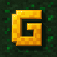

Gilly SMP: The Crossplay Minecraft Survival Server
Gilly SMP is a free, non pay-to-win Minecraft survival server. Play on Java, Bedrock or console, with your inventory and XP synced everywhere.
What is Gilly SMP?
A vanilla-plus Minecraft survival SMP where everyone plays together, on any device, at their own pace.
The survival you know and love, with small quality-of-life touches that keep things friendly, fair and fun. No pay-to-win, no grind walls, no platform gap.
Find out how to joinThe experience
Classic survival, gently improved.
Who it's for
Casual and adult survival players who want to build, explore and hang out with friends.
One shared world
Java, Bedrock and console players, side by side.
Why Play Gilly SMP?
A Minecraft survival server built around fairness, friends and freedom to play anywhere.
Fair for everyone
A strictly non pay-to-win survival server. Everyone starts on equal footing.
True crossplay
Java, Bedrock, Xbox, PlayStation and Switch players join the same SMP.
Playtime sync
Your inventory, XP and progress follow you across sessions and platforms.
Vanilla+ survival
Classic survival gameplay with thoughtful quality-of-life additions.
Friendly community
Join our Discord to meet players, share builds and get help.
Documented
Everything is in our wiki: rules, commands and guides.
100% Non Pay-to-Win
Supporting the server never gives you an edge. Our store only sells:
- Quality-of-life conveniences
- Cosmetics to show off your style
No pay-for-power, no purchasable gear, no paid advantages in survival.
Crossplay + Playtime Sync
Start on your PC, continue on your console, finish on your phone. Gilly SMP syncs your inventory, XP and more, so you never lose progress when switching platforms.
- Java ↔ Bedrock ↔ Console on one world
- Shared inventory and XP
- Play with friends on any device
Mine Diamonds at 35,000 Feet
Home, train, café, couch, cruising altitude. If you have a connection, you're on Gilly SMP.
GILLY-SMP AIRLINES · BOARDING PASS
Yes, really: playable even from a plane over the middle of the Atlantic.
How to Join
Pick your platform. Tap a card to flip it and see the address.
Minecraft Java
Click the card to see the IP
Java Edition
- Open Minecraft Java 26.3
- Multiplayer → Add Server
- Paste
mc.gillyb.net
Java 26.3 is required.
Minecraft Bedrock
Click the card to see the IP
Bedrock Edition
Port: 19132
- Play → Servers → Add Server
- Address:
mc.gillyb.net - Port:
19132
Console
Xbox · PlayStation · Switch
Click to see how
Console
- Add
GillySMPas a friend on your platform - Open Minecraft
- Join from the Friends tab
An online subscription for your console (Xbox, PlayStation or Switch) is required. This is a console-maker requirement, not ours.
FAQ
How do I join on Java?
Flip the Java card in How to Join for the address. Minecraft Java 26.3 is required.
How do I join on Bedrock?
Flip the Bedrock card in How to Join for the address and port.
How do console players join?
Flip the Console card in How to Join for the steps. Your console's online subscription is required by the console manufacturer.
Is Gilly SMP pay-to-win?
No. The store only offers quality-of-life items and cosmetics.
Is my progress shared across platforms?
Yes. Crossplay and playtime sync keep your inventory and XP consistent on Java, Bedrock and console.
What kind of server is this?
A vanilla-plus survival SMP for casual players who want a fair, friendly, cross-platform community.